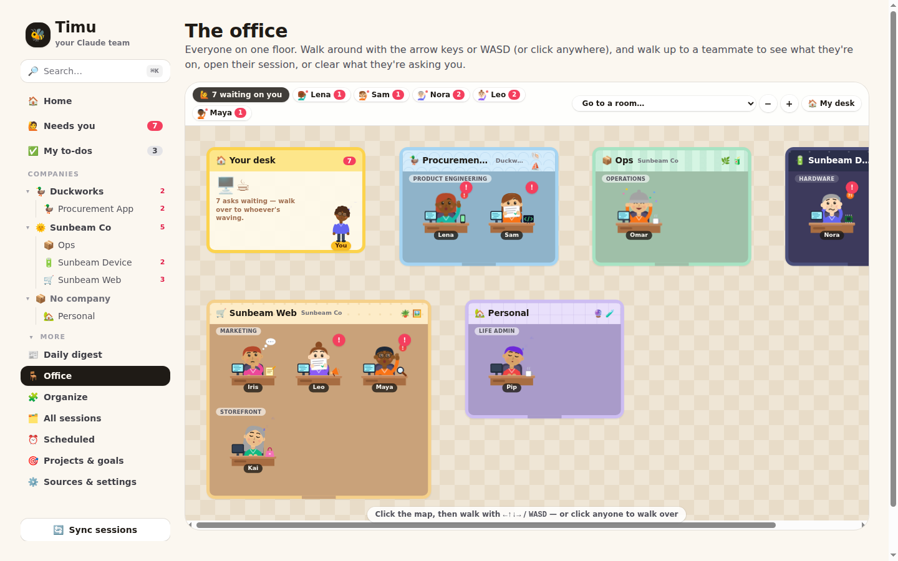
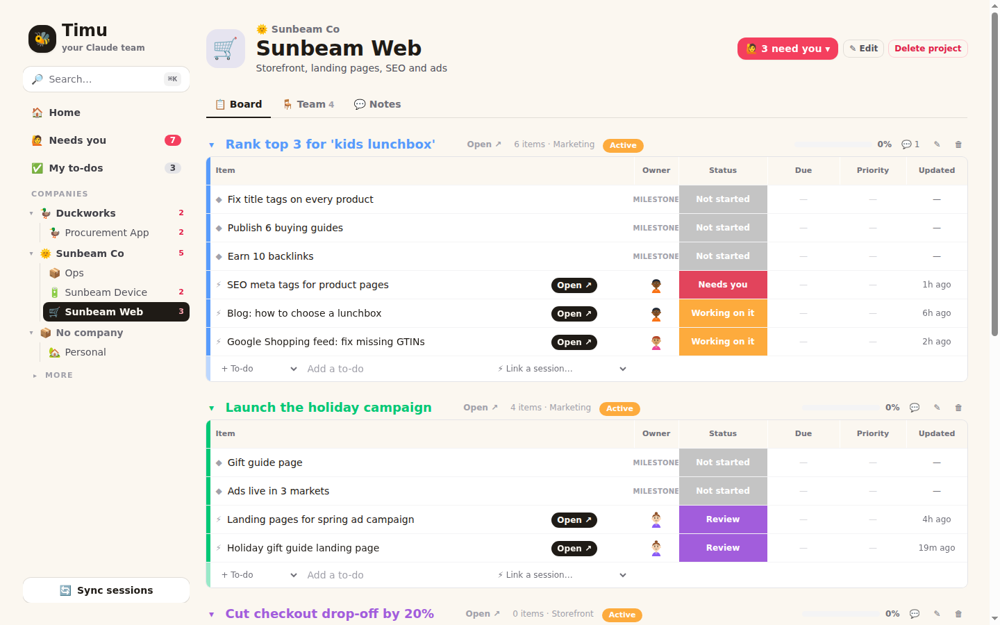
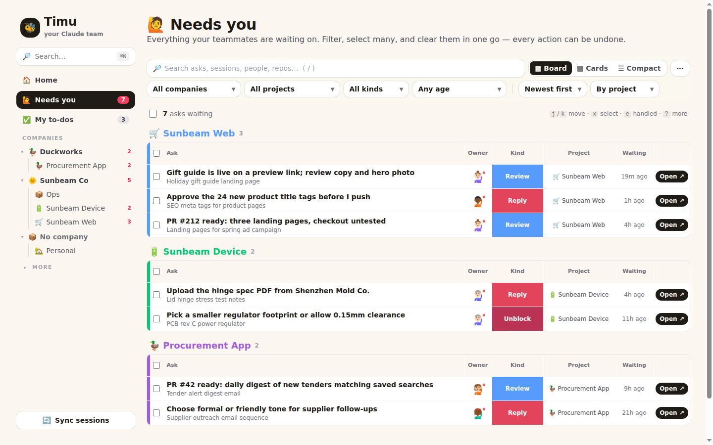
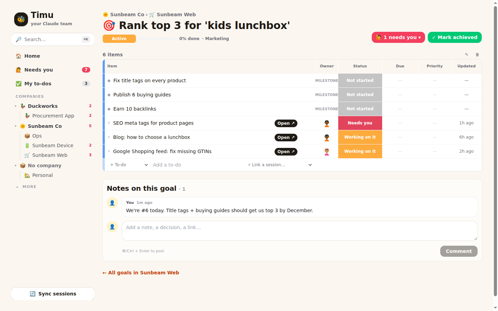
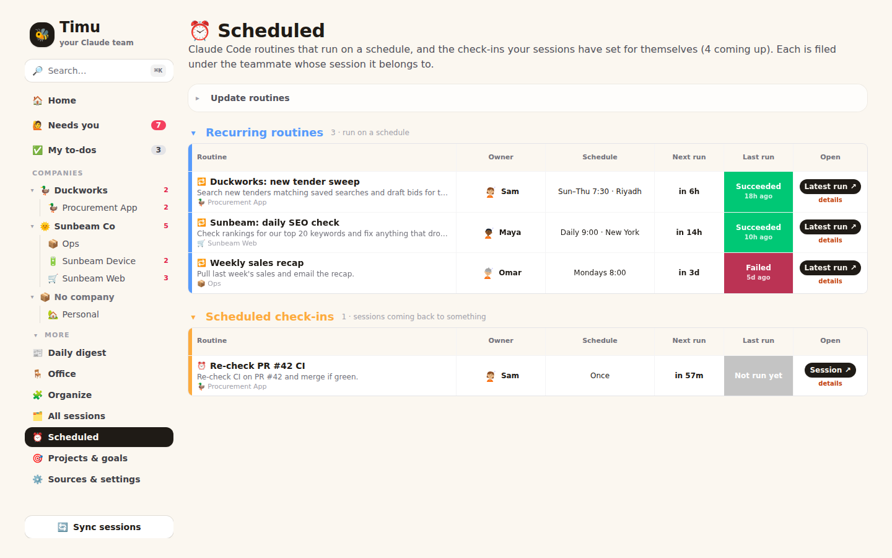
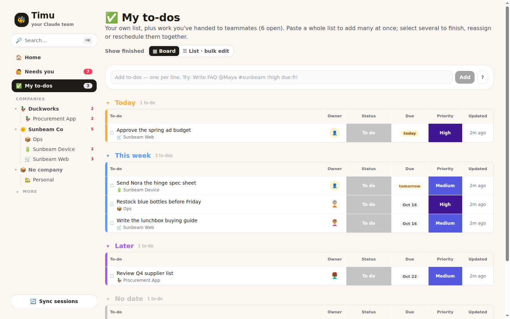

Your Claude sessions, run like a small company.
Timu files every Claude Code and claude.ai session under a teammate, a project and a goal — then shows you the few things that actually need you.

Four commands. Then open your browser.
No database server, no Docker, no cloud account. Timu keeps everything in one SQLite file on your machine.
$ git clone https://github.com/gehadshaat/timu.git $ cd Timu $ npm run setup # installs + writes .env.local $ npm run dev # → http://localhost:3100
- 22Node 22.16 or newer
For its built-in SQLite. Check with
node -v. - ✳Claude Code, signed in
Timu borrows its login to pull your cloud sessions and routines, and reads its local transcripts. Nothing to copy or paste — and it stays signed in as Claude Code refreshes.
- +Claude Code, signed in
No API key. Timu asks Claude through
claude -pon your own login to file sessions and judge what really needs you; without the CLI, Timu uses rules. - 2Two Claude accounts?
Sign in with
CLAUDE_CONFIG_DIR=~/.claude-work claude. Timu finds it and files both into the same companies.
Import. Hire. Clear.
The first visit opens a three-step setup. Nothing is saved until you press Hire the team 🎉.
Import sessions
Local Claude Code transcripts and your claude.ai/code sessions come in automatically. claude.ai chats via an export or the Chrome extension.
Build the team
Companies, projects, teams and cartoon teammates are proposed for you, each owning a stream of sessions. Rename anyone, drop what you don't want.
Clear what needs you
Click a red Needs you cell: done, not needed (it goes quiet until there's news) or snooze. Everything has Undo. From then on Timu syncs by itself and the page updates live.
Every page is the same board.
Coloured groups, one row per thing, status cells you click to change — from a whole company down to one goal.
Goals are groups. Work is rows.
Milestones, to-dos and the Claude sessions working on a goal, side by side, with owner, status, due date and priority.
- Tick, reassign, reschedule in place
- Open ↗ jumps straight into the session
- Set any session to Needs me, Done or Idle

One list of everything waiting on you.
Grouped by project, company or kind. A quick judge filters out the asks that never needed you, and learns your rules.
- Clear one, or select fifty and clear them together
- Keyboard:
jkens

Visit a goal from anywhere. Mark it done.
Company boards list every goal; tick one to mark it achieved, or open its sessions from the ⚡ column.

Your routines, in plain words.
Claude Code routines and the check-ins your sessions set for themselves: "Daily 9:00 · New York", next run, last result, and who it belongs to.

Overdue, today, this week.
Quick-add speaks shorthand: Write FAQ @Maya #sunbeam-web !high due:fri. Paste a list to add twenty at once.

Questions people ask
Where does my data go?
It stays on your machine, in data/timu.db. Timu talks to Claude to read your own sessions and routines; to Claude through your own Claude Code CLI for filing and triage; and to TypeSafe only if you set TYPESAFE_API_KEY, which receives a clipped summary of each session it judges.
Do I have to paste a token?
No. Timu re-reads the login Claude Code keeps on your machine on every sync. If it expires, Settings says "run claude" and the next sync picks it up. (On macOS, where the login lives in the Keychain, set CLAUDE_SESSIONS_TOKEN instead.)
Can Claude run it for me?
Yes — Timu is an MCP server. Add it with the command in Settings → Let Claude run Timu, then ask "file my unfiled sessions" or "what needs me today?". Bulk changes return an undo id.
I have two Claude accounts.
Sign in to the second with CLAUDE_CONFIG_DIR=~/.claude-work claude. Timu syncs both, each with its own login, into the same companies, projects and goals.
What does it cost?
Running Timu costs nothing beyond your machine. Filing and triage run through your Claude Code login, so they count toward your Claude plan’s usage; without the CLI, Timu sticks to rules. Timu syncs every minute, but it asks Claude only about sessions with news, once they pause.
Is the office a game?
A little. It's one walkable map — WASD, click to walk, E to talk — where anyone waiting on you waves a red !. Talking to them opens their session or clears their ask.